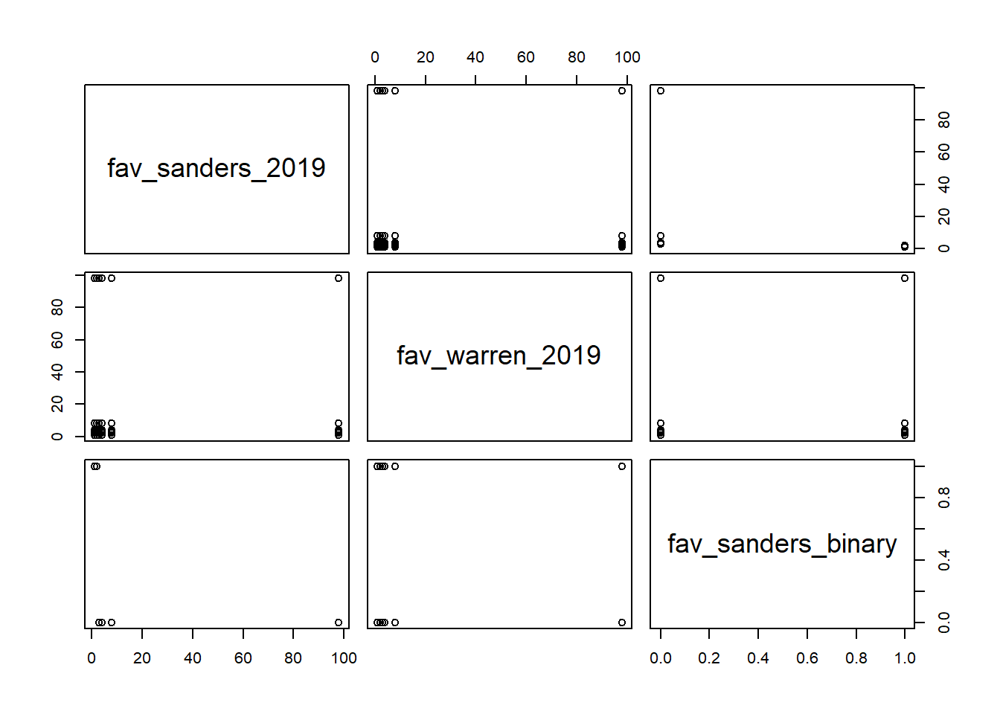
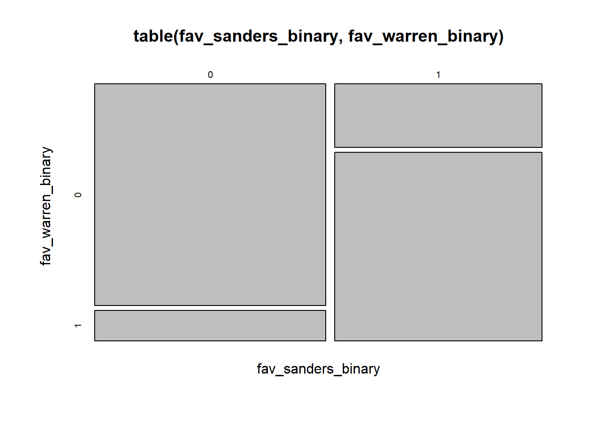

7 dplyr and tidy
7.1 Into the tidyverse
dplyris a handy package for changing datatidyris a handy package for reshaping data- In combination they offer a powerful way to quickly extract insight from your data
7.1.1 Our example
Data comes from fivethirtyeight.com
library(dplyr)
library(tidyr)
library(readr)
primaryPolls<-read_csv('https://jmontgomery.github.io/PDS/Datasets/president_primary_polls_feb2020.csv')
primaryPolls$start_date<-as.Date(primaryPolls$start_date, "%m/%d/%y")
class(primaryPolls)## [1] "spec_tbl_df" "tbl_df" "tbl" "data.frame"- A tibble is basically a data frame
- They are both friendlier and more structured than traditional data frames
## # A tibble: 16,661 x 33
## question_id poll_id cycle state pollster_id pollster sponsor_ids sponsors
## <dbl> <dbl> <dbl> <chr> <dbl> <chr> <dbl> <chr>
## 1 116805 63512 2020 New ~ 1515 Data fo~ NA <NA>
## 2 116805 63512 2020 New ~ 1515 Data fo~ NA <NA>
## 3 116805 63512 2020 New ~ 1515 Data fo~ NA <NA>
## 4 116805 63512 2020 New ~ 1515 Data fo~ NA <NA>
## 5 116805 63512 2020 New ~ 1515 Data fo~ NA <NA>
## 6 116805 63512 2020 New ~ 1515 Data fo~ NA <NA>
## 7 116805 63512 2020 New ~ 1515 Data fo~ NA <NA>
## 8 116805 63512 2020 New ~ 1515 Data fo~ NA <NA>
## 9 116799 63511 2020 <NA> 744 Ipsos 71 Reuters
## 10 116799 63511 2020 <NA> 744 Ipsos 71 Reuters
## # ... with 16,651 more rows, and 25 more variables: display_name <chr>,
## # pollster_rating_id <dbl>, pollster_rating_name <chr>, fte_grade <chr>,
## # sample_size <dbl>, population <chr>, population_full <chr>,
## # methodology <chr>, office_type <chr>, start_date <date>, end_date <chr>,
## # sponsor_candidate <lgl>, internal <lgl>, partisan <lgl>, tracking <lgl>,
## # nationwide_batch <lgl>, created_at <chr>, notes <chr>, url <chr>,
## # stage <chr>, party <chr>, answer <chr>, candidate_id <dbl>,
## # candidate_name <chr>, pct <dbl>You can also print the first 10 rows of all the columns
## # A tibble: 16,661 x 33
## question_id poll_id cycle state pollster_id pollster
## <dbl> <dbl> <dbl> <chr> <dbl> <chr>
## 1 116805 63512 2020 New Hampshire 1515 Data for Progress
## 2 116805 63512 2020 New Hampshire 1515 Data for Progress
## 3 116805 63512 2020 New Hampshire 1515 Data for Progress
## 4 116805 63512 2020 New Hampshire 1515 Data for Progress
## 5 116805 63512 2020 New Hampshire 1515 Data for Progress
## 6 116805 63512 2020 New Hampshire 1515 Data for Progress
## 7 116805 63512 2020 New Hampshire 1515 Data for Progress
## 8 116805 63512 2020 New Hampshire 1515 Data for Progress
## 9 116799 63511 2020 <NA> 744 Ipsos
## 10 116799 63511 2020 <NA> 744 Ipsos
## sponsor_ids sponsors display_name pollster_rating_id
## <dbl> <chr> <chr> <dbl>
## 1 NA <NA> Data for Progress 522
## 2 NA <NA> Data for Progress 522
## 3 NA <NA> Data for Progress 522
## 4 NA <NA> Data for Progress 522
## 5 NA <NA> Data for Progress 522
## 6 NA <NA> Data for Progress 522
## 7 NA <NA> Data for Progress 522
## 8 NA <NA> Data for Progress 522
## 9 71 Reuters Ipsos 154
## 10 71 Reuters Ipsos 154
## pollster_rating_name fte_grade sample_size population population_full
## <chr> <chr> <dbl> <chr> <chr>
## 1 Data for Progress B/C 1295 lv lv-d
## 2 Data for Progress B/C 1295 lv lv-d
## 3 Data for Progress B/C 1295 lv lv-d
## 4 Data for Progress B/C 1295 lv lv-d
## 5 Data for Progress B/C 1295 lv lv-d
## 6 Data for Progress B/C 1295 lv lv-d
## 7 Data for Progress B/C 1295 lv lv-d
## 8 Data for Progress B/C 1295 lv lv-d
## 9 Ipsos B- 556 rv rv-d
## 10 Ipsos B- 556 rv rv-d
## methodology office_type start_date end_date sponsor_candidate internal
## <chr> <chr> <date> <chr> <lgl> <lgl>
## 1 Text U.S. President 2020-02-07 2/10/20 NA FALSE
## 2 Text U.S. President 2020-02-07 2/10/20 NA FALSE
## 3 Text U.S. President 2020-02-07 2/10/20 NA FALSE
## 4 Text U.S. President 2020-02-07 2/10/20 NA FALSE
## 5 Text U.S. President 2020-02-07 2/10/20 NA FALSE
## 6 Text U.S. President 2020-02-07 2/10/20 NA FALSE
## 7 Text U.S. President 2020-02-07 2/10/20 NA FALSE
## 8 Text U.S. President 2020-02-07 2/10/20 NA FALSE
## 9 Online U.S. President 2020-02-06 2/10/20 NA FALSE
## 10 Online U.S. President 2020-02-06 2/10/20 NA FALSE
## partisan tracking nationwide_batch created_at notes
## <lgl> <lgl> <lgl> <chr> <chr>
## 1 NA FALSE FALSE 2/10/20 21:47 <NA>
## 2 NA FALSE FALSE 2/10/20 21:47 <NA>
## 3 NA FALSE FALSE 2/10/20 21:47 <NA>
## 4 NA FALSE FALSE 2/10/20 21:47 <NA>
## 5 NA FALSE FALSE 2/10/20 21:47 <NA>
## 6 NA FALSE FALSE 2/10/20 21:47 <NA>
## 7 NA FALSE FALSE 2/10/20 21:47 <NA>
## 8 NA FALSE FALSE 2/10/20 21:47 <NA>
## 9 NA FALSE FALSE 2/10/20 18:27 <NA>
## 10 NA FALSE FALSE 2/10/20 18:27 <NA>
## url
## <chr>
## 1 http://filesforprogress.org/datasets/2020/2/nh/new_hampshire_primary.pdf
## 2 http://filesforprogress.org/datasets/2020/2/nh/new_hampshire_primary.pdf
## 3 http://filesforprogress.org/datasets/2020/2/nh/new_hampshire_primary.pdf
## 4 http://filesforprogress.org/datasets/2020/2/nh/new_hampshire_primary.pdf
## 5 http://filesforprogress.org/datasets/2020/2/nh/new_hampshire_primary.pdf
## 6 http://filesforprogress.org/datasets/2020/2/nh/new_hampshire_primary.pdf
## 7 http://filesforprogress.org/datasets/2020/2/nh/new_hampshire_primary.pdf
## 8 http://filesforprogress.org/datasets/2020/2/nh/new_hampshire_primary.pdf
## 9 https://www.ipsos.com/sites/default/files/ct/news/documents/2020-02/topline_~
## 10 https://www.ipsos.com/sites/default/files/ct/news/documents/2020-02/topline_~
## stage party answer candidate_id candidate_name pct
## <chr> <chr> <chr> <dbl> <chr> <dbl>
## 1 primary DEM Sanders 13257 Bernard Sanders 28
## 2 primary DEM Yang 13329 Andrew Yang 5
## 3 primary DEM Buttigieg 13345 Pete Buttigieg 26
## 4 primary DEM Biden 13256 Joseph R. Biden Jr. 9
## 5 primary DEM Gabbard 13343 Tulsi Gabbard 3
## 6 primary DEM Klobuchar 13310 Amy Klobuchar 13
## 7 primary DEM Warren 13258 Elizabeth Warren 14
## 8 primary DEM Steyer 13327 Tom Steyer 3
## 9 primary DEM Sanders 13257 Bernard Sanders 20
## 10 primary DEM Biden 13256 Joseph R. Biden Jr. 17
## # ... with 16,651 more rows- You can access elements basically the same way
- They never allow partial matching (which is evil anyways)
- Partial matching allows you to type the first few characters of a column name and it will figure out which one you meant
- You can use
as.tibbleoras.data.frameto jump back and forth
7.2 Back to dplyr
- Subset data by rows:
filter - Reorder by rows:
arrange - Subset data by column:
select - Create new variables as a function of other variables:
mutate - Collapse values down (or extract statistic):
summarise - We can use
group_byto make changes in the scope
7.2.1 filter
filterallows you to easily subset data using conditions as we have done before using accessors
## # A tibble: 874 x 33
## question_id poll_id cycle state pollster_id pollster sponsor_ids sponsors
## <dbl> <dbl> <dbl> <chr> <dbl> <chr> <dbl> <chr>
## 1 116805 63512 2020 New ~ 1515 Data fo~ NA <NA>
## 2 116799 63511 2020 <NA> 744 Ipsos 71 Reuters
## 3 116732 63489 2020 New ~ 1102 Emerson~ 43 7News
## 4 116733 63490 2020 New ~ 458 Suffolk~ 68323 Boston ~
## 5 116743 63493 2020 New ~ 23 America~ NA <NA>
## 6 116798 63510 2020 New ~ 1529 Elucd NA <NA>
## 7 116745 63494 2020 New ~ 1470 Univers~ 143 CNN
## 8 116792 63508 2020 Cali~ 1491 Capitol~ NA <NA>
## 9 116763 63496 2020 <NA> 396 Quinnip~ NA <NA>
## 10 116714 63483 2020 New ~ 1102 Emerson~ 43 7News
## # ... with 864 more rows, and 25 more variables: display_name <chr>,
## # pollster_rating_id <dbl>, pollster_rating_name <chr>, fte_grade <chr>,
## # sample_size <dbl>, population <chr>, population_full <chr>,
## # methodology <chr>, office_type <chr>, start_date <date>, end_date <chr>,
## # sponsor_candidate <lgl>, internal <lgl>, partisan <lgl>, tracking <lgl>,
## # nationwide_batch <lgl>, created_at <chr>, notes <chr>, url <chr>,
## # stage <chr>, party <chr>, answer <chr>, candidate_id <dbl>,
## # candidate_name <chr>, pct <dbl>- Or you can include multiple conditions
## # A tibble: 84 x 33
## question_id poll_id cycle state pollster_id pollster sponsor_ids sponsors
## <dbl> <dbl> <dbl> <chr> <dbl> <chr> <dbl> <chr>
## 1 116805 63512 2020 New ~ 1515 Data fo~ NA <NA>
## 2 116732 63489 2020 New ~ 1102 Emerson~ 43 7News
## 3 116733 63490 2020 New ~ 458 Suffolk~ 68323 Boston ~
## 4 116743 63493 2020 New ~ 23 America~ NA <NA>
## 5 116798 63510 2020 New ~ 1529 Elucd NA <NA>
## 6 116745 63494 2020 New ~ 1470 Univers~ 143 CNN
## 7 116714 63483 2020 New ~ 1102 Emerson~ 43 7News
## 8 116715 63484 2020 New ~ 458 Suffolk~ 68323 Boston ~
## 9 116717 63485 2020 New ~ 1470 Univers~ 143 CNN
## 10 116718 63486 2020 New ~ 568 YouGov 133 CBS News
## # ... with 74 more rows, and 25 more variables: display_name <chr>,
## # pollster_rating_id <dbl>, pollster_rating_name <chr>, fte_grade <chr>,
## # sample_size <dbl>, population <chr>, population_full <chr>,
## # methodology <chr>, office_type <chr>, start_date <date>, end_date <chr>,
## # sponsor_candidate <lgl>, internal <lgl>, partisan <lgl>, tracking <lgl>,
## # nationwide_batch <lgl>, created_at <chr>, notes <chr>, url <chr>,
## # stage <chr>, party <chr>, answer <chr>, candidate_id <dbl>,
## # candidate_name <chr>, pct <dbl>- Everything you have already learned about boolean operators applies here.
7.2.2 arrange
arrangedoes the same thing, but organizes data by rows insead of subsetting by rows.
## # A tibble: 16,661 x 33
## question_id poll_id cycle state pollster_id pollster sponsor_ids sponsors
## <dbl> <dbl> <dbl> <chr> <dbl> <chr> <dbl> <chr>
## 1 99478 58691 2020 Alab~ 1193 SurveyM~ 132 NBC News
## 2 99478 58691 2020 Alab~ 1193 SurveyM~ 132 NBC News
## 3 99478 58691 2020 Alab~ 1193 SurveyM~ 132 NBC News
## 4 99478 58691 2020 Alab~ 1193 SurveyM~ 132 NBC News
## 5 99478 58691 2020 Alab~ 1193 SurveyM~ 132 NBC News
## 6 99478 58691 2020 Alab~ 1193 SurveyM~ 132 NBC News
## 7 99478 58691 2020 Alab~ 1193 SurveyM~ 132 NBC News
## 8 99478 58691 2020 Alab~ 1193 SurveyM~ 132 NBC News
## 9 99478 58691 2020 Alab~ 1193 SurveyM~ 132 NBC News
## 10 99478 58691 2020 Alab~ 1193 SurveyM~ 132 NBC News
## # ... with 16,651 more rows, and 25 more variables: display_name <chr>,
## # pollster_rating_id <dbl>, pollster_rating_name <chr>, fte_grade <chr>,
## # sample_size <dbl>, population <chr>, population_full <chr>,
## # methodology <chr>, office_type <chr>, start_date <date>, end_date <chr>,
## # sponsor_candidate <lgl>, internal <lgl>, partisan <lgl>, tracking <lgl>,
## # nationwide_batch <lgl>, created_at <chr>, notes <chr>, url <chr>,
## # stage <chr>, party <chr>, answer <chr>, candidate_id <dbl>,
## # candidate_name <chr>, pct <dbl>- Or in descending order
## # A tibble: 16,661 x 33
## question_id poll_id cycle state pollster_id pollster sponsor_ids sponsors
## <dbl> <dbl> <dbl> <chr> <dbl> <chr> <dbl> <chr>
## 1 93812 57768 2020 Alab~ 1365 Change ~ NA <NA>
## 2 93812 57768 2020 Alab~ 1365 Change ~ NA <NA>
## 3 93812 57768 2020 Alab~ 1365 Change ~ NA <NA>
## 4 93812 57768 2020 Alab~ 1365 Change ~ NA <NA>
## 5 93812 57768 2020 Alab~ 1365 Change ~ NA <NA>
## 6 93812 57768 2020 Alab~ 1365 Change ~ NA <NA>
## 7 93812 57768 2020 Alab~ 1365 Change ~ NA <NA>
## 8 93812 57768 2020 Alab~ 1365 Change ~ NA <NA>
## 9 93812 57768 2020 Alab~ 1365 Change ~ NA <NA>
## 10 93812 57768 2020 Alab~ 1365 Change ~ NA <NA>
## # ... with 16,651 more rows, and 25 more variables: display_name <chr>,
## # pollster_rating_id <dbl>, pollster_rating_name <chr>, fte_grade <chr>,
## # sample_size <dbl>, population <chr>, population_full <chr>,
## # methodology <chr>, office_type <chr>, start_date <date>, end_date <chr>,
## # sponsor_candidate <lgl>, internal <lgl>, partisan <lgl>, tracking <lgl>,
## # nationwide_batch <lgl>, created_at <chr>, notes <chr>, url <chr>,
## # stage <chr>, party <chr>, answer <chr>, candidate_id <dbl>,
## # candidate_name <chr>, pct <dbl>7.2.3 select
- Select is just a much easier way to subset by column
## # A tibble: 16,661 x 3
## state candidate_name start_date
## <chr> <chr> <date>
## 1 New Hampshire Bernard Sanders 2020-02-07
## 2 New Hampshire Andrew Yang 2020-02-07
## 3 New Hampshire Pete Buttigieg 2020-02-07
## 4 New Hampshire Joseph R. Biden Jr. 2020-02-07
## 5 New Hampshire Tulsi Gabbard 2020-02-07
## 6 New Hampshire Amy Klobuchar 2020-02-07
## 7 New Hampshire Elizabeth Warren 2020-02-07
## 8 New Hampshire Tom Steyer 2020-02-07
## 9 <NA> Bernard Sanders 2020-02-06
## 10 <NA> Joseph R. Biden Jr. 2020-02-06
## # ... with 16,651 more rows- It comes with a nice syntax for doing this without just listing
var1:var20will select all columns between these two-var1:var20will select everything except that rangestarts_with("cand")will select columns that start with “cand”- Similar functionality for
ends_with,contains, and matches
A fun trick to move your favorite variables to the front, but keep it all:
## # A tibble: 16,661 x 33
## state candidate_name start_date question_id poll_id cycle pollster_id
## <chr> <chr> <date> <dbl> <dbl> <dbl> <dbl>
## 1 New ~ Bernard Sande~ 2020-02-07 116805 63512 2020 1515
## 2 New ~ Andrew Yang 2020-02-07 116805 63512 2020 1515
## 3 New ~ Pete Buttigieg 2020-02-07 116805 63512 2020 1515
## 4 New ~ Joseph R. Bid~ 2020-02-07 116805 63512 2020 1515
## 5 New ~ Tulsi Gabbard 2020-02-07 116805 63512 2020 1515
## 6 New ~ Amy Klobuchar 2020-02-07 116805 63512 2020 1515
## 7 New ~ Elizabeth War~ 2020-02-07 116805 63512 2020 1515
## 8 New ~ Tom Steyer 2020-02-07 116805 63512 2020 1515
## 9 <NA> Bernard Sande~ 2020-02-06 116799 63511 2020 744
## 10 <NA> Joseph R. Bid~ 2020-02-06 116799 63511 2020 744
## # ... with 16,651 more rows, and 26 more variables: pollster <chr>,
## # sponsor_ids <dbl>, sponsors <chr>, display_name <chr>,
## # pollster_rating_id <dbl>, pollster_rating_name <chr>, fte_grade <chr>,
## # sample_size <dbl>, population <chr>, population_full <chr>,
## # methodology <chr>, office_type <chr>, end_date <chr>,
## # sponsor_candidate <lgl>, internal <lgl>, partisan <lgl>, tracking <lgl>,
## # nationwide_batch <lgl>, created_at <chr>, notes <chr>, url <chr>,
## # stage <chr>, party <chr>, answer <chr>, candidate_id <dbl>, pct <dbl>- Note here that
renameis the mythical easy way to rename a column, although syntax seems backwards - You have to specify the new column name on the left side of the equal sign and the old column name on the right
basicPolls<-select(primaryPolls, state, candidate_name, start_date, pct)
rename(basicPolls, candidate = candidate_name)## # A tibble: 16,661 x 4
## state candidate start_date pct
## <chr> <chr> <date> <dbl>
## 1 New Hampshire Bernard Sanders 2020-02-07 28
## 2 New Hampshire Andrew Yang 2020-02-07 5
## 3 New Hampshire Pete Buttigieg 2020-02-07 26
## 4 New Hampshire Joseph R. Biden Jr. 2020-02-07 9
## 5 New Hampshire Tulsi Gabbard 2020-02-07 3
## 6 New Hampshire Amy Klobuchar 2020-02-07 13
## 7 New Hampshire Elizabeth Warren 2020-02-07 14
## 8 New Hampshire Tom Steyer 2020-02-07 3
## 9 <NA> Bernard Sanders 2020-02-06 20
## 10 <NA> Joseph R. Biden Jr. 2020-02-06 17
## # ... with 16,651 more rows7.2.4 mutate
mutateallows us to create a new variable that is a function of the others- If you want to add the new column(s) to your existing tibble, you must use the assignment operator.
- Otherwise it will just print it out and throw the results away
## # A tibble: 16,661 x 5
## state candidate_name start_date pct proportion
## <chr> <chr> <date> <dbl> <dbl>
## 1 New Hampshire Bernard Sanders 2020-02-07 28 0.28
## 2 New Hampshire Andrew Yang 2020-02-07 5 0.05
## 3 New Hampshire Pete Buttigieg 2020-02-07 26 0.26
## 4 New Hampshire Joseph R. Biden Jr. 2020-02-07 9 0.09
## 5 New Hampshire Tulsi Gabbard 2020-02-07 3 0.03
## 6 New Hampshire Amy Klobuchar 2020-02-07 13 0.13
## 7 New Hampshire Elizabeth Warren 2020-02-07 14 0.14
## 8 New Hampshire Tom Steyer 2020-02-07 3 0.03
## 9 <NA> Bernard Sanders 2020-02-06 20 0.2
## 10 <NA> Joseph R. Biden Jr. 2020-02-06 17 0.17
## # ... with 16,651 more rows- transmute creates and returns a new tibble with only the mutated variable(s)
## # A tibble: 16,661 x 1
## proportion
## <dbl>
## 1 0.28
## 2 0.05
## 3 0.26
## 4 0.09
## 5 0.03
## 6 0.13
## 7 0.14
## 8 0.03
## 9 0.2
## 10 0.17
## # ... with 16,651 more rows## # A tibble: 16,661 x 1
## numberRespondents
## <dbl>
## 1 363
## 2 65
## 3 337
## 4 117
## 5 39
## 6 168
## 7 181
## 8 39
## 9 111
## 10 95
## # ... with 16,651 more rows## # A tibble: 16,661 x 2
## proportion numberRespondents
## <dbl> <dbl>
## 1 0.28 363
## 2 0.05 65
## 3 0.26 337
## 4 0.09 117
## 5 0.03 39
## 6 0.13 168
## 7 0.14 181
## 8 0.03 39
## 9 0.2 111
## 10 0.17 95
## # ... with 16,651 more rows- Note that you can use a ton of the basic functions we have already covered like
sum,mean,sqrt, etc. - A useful one is
n(), which just counts the number of observations - This includes logical comparisons
## # A tibble: 16,661 x 6
## state candidate_name start_date pct proportion top_tier
## <chr> <chr> <date> <dbl> <dbl> <dbl>
## 1 New Hampshire Bernard Sanders 2020-02-07 28 0.28 1
## 2 New Hampshire Andrew Yang 2020-02-07 5 0.05 0
## 3 New Hampshire Pete Buttigieg 2020-02-07 26 0.26 1
## 4 New Hampshire Joseph R. Biden Jr. 2020-02-07 9 0.09 0
## 5 New Hampshire Tulsi Gabbard 2020-02-07 3 0.03 0
## 6 New Hampshire Amy Klobuchar 2020-02-07 13 0.13 1
## 7 New Hampshire Elizabeth Warren 2020-02-07 14 0.14 1
## 8 New Hampshire Tom Steyer 2020-02-07 3 0.03 0
## 9 <NA> Bernard Sanders 2020-02-06 20 0.2 1
## 10 <NA> Joseph R. Biden Jr. 2020-02-06 17 0.17 1
## # ... with 16,651 more rows7.2.5 summarise
- We can easily extract summary statistics
## # A tibble: 1 x 2
## average_candidate count
## <dbl> <int>
## 1 6.34 16661- This is more powerful when also using the
group_byfunction
basicPolls_grouped<-group_by(basicPolls, candidate_name)
summarise(basicPolls_grouped, average_candidate=mean(pct), count=n())## # A tibble: 76 x 3
## candidate_name average_candidate count
## <chr> <dbl> <int>
## 1 Amy Klobuchar 2.32 874
## 2 Andrew Cuomo 0.433 12
## 3 Andrew Yang 2.34 831
## 4 Barack Obama 0 2
## 5 Ben Sasse 0.711 36
## 6 Bernard Sanders 18.3 960
## 7 Beto O'Rourke 3.76 653
## 8 Bill de Blasio 0.534 318
## 9 Bob Corker 0.611 36
## 10 Charles D. Baker 31.5 2
## # ... with 66 more rowsbasicPolls_grouped<-group_by(basicPolls, candidate_name, state)
summarise(basicPolls_grouped, average_candidate=mean(pct), count=n())## # A tibble: 1,024 x 4
## # Groups: candidate_name [76]
## candidate_name state average_candidate count
## <chr> <chr> <dbl> <int>
## 1 Amy Klobuchar Alabama 1 3
## 2 Amy Klobuchar Arizona 1.18 6
## 3 Amy Klobuchar California 1.74 40
## 4 Amy Klobuchar Colorado 0.1 1
## 5 Amy Klobuchar Delaware 1 1
## 6 Amy Klobuchar Florida 1.98 13
## 7 Amy Klobuchar Georgia 1.27 4
## 8 Amy Klobuchar Illinois 2.15 2
## 9 Amy Klobuchar Indiana 0 1
## 10 Amy Klobuchar Iowa 5.97 61
## # ... with 1,014 more rows7.2.6 Piping
- The tidyverse includes a nice syntax for combining multiple commands so we don’t have to create new objects all of the time.
- The
%?%syntax allows us to pass on the results of one line to another - The result from the left side of the
%>%is passed as the first parameter of the next function
basicPolls %>%
group_by(candidate_name, state) %>%
summarise(average_candidate=mean(pct), count=n())## # A tibble: 1,024 x 4
## # Groups: candidate_name [76]
## candidate_name state average_candidate count
## <chr> <chr> <dbl> <int>
## 1 Amy Klobuchar Alabama 1 3
## 2 Amy Klobuchar Arizona 1.18 6
## 3 Amy Klobuchar California 1.74 40
## 4 Amy Klobuchar Colorado 0.1 1
## 5 Amy Klobuchar Delaware 1 1
## 6 Amy Klobuchar Florida 1.98 13
## 7 Amy Klobuchar Georgia 1.27 4
## 8 Amy Klobuchar Illinois 2.15 2
## 9 Amy Klobuchar Indiana 0 1
## 10 Amy Klobuchar Iowa 5.97 61
## # ... with 1,014 more rows- The above code is equivalent to the following:
## # A tibble: 1,024 x 4
## # Groups: candidate_name [76]
## candidate_name state average_candidate count
## <chr> <chr> <dbl> <int>
## 1 Amy Klobuchar Alabama 1 3
## 2 Amy Klobuchar Arizona 1.18 6
## 3 Amy Klobuchar California 1.74 40
## 4 Amy Klobuchar Colorado 0.1 1
## 5 Amy Klobuchar Delaware 1 1
## 6 Amy Klobuchar Florida 1.98 13
## 7 Amy Klobuchar Georgia 1.27 4
## 8 Amy Klobuchar Illinois 2.15 2
## 9 Amy Klobuchar Indiana 0 1
## 10 Amy Klobuchar Iowa 5.97 61
## # ... with 1,014 more rows- Which is equivalent to this:
grouped_by <- group_by(basicPolls, candidate_name, state)
summarise(grouped_by, average_candidate=mean(pct), count=n())## # A tibble: 1,024 x 4
## # Groups: candidate_name [76]
## candidate_name state average_candidate count
## <chr> <chr> <dbl> <int>
## 1 Amy Klobuchar Alabama 1 3
## 2 Amy Klobuchar Arizona 1.18 6
## 3 Amy Klobuchar California 1.74 40
## 4 Amy Klobuchar Colorado 0.1 1
## 5 Amy Klobuchar Delaware 1 1
## 6 Amy Klobuchar Florida 1.98 13
## 7 Amy Klobuchar Georgia 1.27 4
## 8 Amy Klobuchar Illinois 2.15 2
## 9 Amy Klobuchar Indiana 0 1
## 10 Amy Klobuchar Iowa 5.97 61
## # ... with 1,014 more rows- See assigned readings for more useful summary variables and
ungroup
basicPolls %>%
group_by(candidate_name, state) %>%
summarise(average_candidate=mean(pct), count=n()) %>%
filter(count>10)## # A tibble: 206 x 4
## # Groups: candidate_name [44]
## candidate_name state average_candidate count
## <chr> <chr> <dbl> <int>
## 1 Amy Klobuchar California 1.74 40
## 2 Amy Klobuchar Florida 1.98 13
## 3 Amy Klobuchar Iowa 5.97 61
## 4 Amy Klobuchar Nevada 1.71 15
## 5 Amy Klobuchar New Hampshire 5.42 84
## 6 Amy Klobuchar Pennsylvania 1.53 11
## 7 Amy Klobuchar South Carolina 1.27 34
## 8 Amy Klobuchar Texas 1.47 23
## 9 Amy Klobuchar Wisconsin 2.52 16
## 10 Amy Klobuchar <NA> 1.62 503
## # ... with 196 more rowsprimaryPolls %>%
group_by(candidate_name, state) %>%
summarise(average_candidate=mean(pct), count=n()) %>%
filter(count>10) %>%
mutate(average_prop=average_candidate/100) %>%
select(average_prop, candidate_name, state, count)## # A tibble: 206 x 4
## # Groups: candidate_name [44]
## average_prop candidate_name state count
## <dbl> <chr> <chr> <int>
## 1 0.0174 Amy Klobuchar California 40
## 2 0.0198 Amy Klobuchar Florida 13
## 3 0.0597 Amy Klobuchar Iowa 61
## 4 0.0171 Amy Klobuchar Nevada 15
## 5 0.0542 Amy Klobuchar New Hampshire 84
## 6 0.0153 Amy Klobuchar Pennsylvania 11
## 7 0.0127 Amy Klobuchar South Carolina 34
## 8 0.0147 Amy Klobuchar Texas 23
## 9 0.0252 Amy Klobuchar Wisconsin 16
## 10 0.0162 Amy Klobuchar <NA> 503
## # ... with 196 more rows7.2.7 Pivots
In many cases the data is not quite organized the way we want.
Right now we have each poll as a separate row. But what if we want each candidate to be a row so we can analyze their trends in polls over time?
Or what if we get the trend line and want to instead reorganize to look at each poll separately?
The key commands here are
pivot_widerandpivot_longerSee Chapter 12 for some additional (but less universally useful functions)
In our running example we have one entry for each poll. How could we combine these to list the result from each unique poll togehter?
The key here is that the values of interest are in the
pctcolumn and the groupings of interest are in the candidates column
nevadaPrimaries<-primaryPolls %>%
filter(candidate_name %in% c("Amy Klobuchar", "Bernard Sanders", "Elizabeth Warren", "Joseph R. Biden Jr.", "Michael Bloomberg", "Pete Buttigieg")) %>%
filter(state=="Nevada") %>%
select(candidate_name, pct, start_date, sample_size)
print(nevadaPrimaries, n=Inf)## # A tibble: 76 x 4
## candidate_name pct start_date sample_size
## <chr> <dbl> <date> <dbl>
## 1 Joseph R. Biden Jr. 19.4 2020-01-08 500
## 2 Bernard Sanders 17.6 2020-01-08 500
## 3 Elizabeth Warren 10.6 2020-01-08 500
## 4 Pete Buttigieg 8.2 2020-01-08 500
## 5 Amy Klobuchar 3.6 2020-01-08 500
## 6 Elizabeth Warren 14 2020-01-06 600
## 7 Bernard Sanders 29 2020-01-06 600
## 8 Joseph R. Biden Jr. 28 2020-01-06 600
## 9 Pete Buttigieg 6 2020-01-06 600
## 10 Amy Klobuchar 4 2020-01-06 600
## 11 Joseph R. Biden Jr. 23 2020-01-05 635
## 12 Bernard Sanders 17 2020-01-05 635
## 13 Elizabeth Warren 12 2020-01-05 635
## 14 Pete Buttigieg 6 2020-01-05 635
## 15 Michael Bloomberg 2 2020-01-05 635
## 16 Amy Klobuchar 2 2020-01-05 635
## 17 Joseph R. Biden Jr. 24 2019-11-10 627
## 18 Bernard Sanders 18 2019-11-10 627
## 19 Elizabeth Warren 18 2019-11-10 627
## 20 Pete Buttigieg 8 2019-11-10 627
## 21 Amy Klobuchar 2 2019-11-10 627
## 22 Joseph R. Biden Jr. 33 2019-11-06 626
## 23 Bernard Sanders 23 2019-11-06 626
## 24 Elizabeth Warren 21 2019-11-06 626
## 25 Pete Buttigieg 9 2019-11-06 626
## 26 Amy Klobuchar 2 2019-11-06 626
## 27 Joseph R. Biden Jr. 29.9 2019-10-31 451
## 28 Bernard Sanders 18.8 2019-10-31 451
## 29 Elizabeth Warren 22.2 2019-10-31 451
## 30 Pete Buttigieg 4.9 2019-10-31 451
## 31 Amy Klobuchar 0.7 2019-10-31 451
## 32 Joseph R. Biden Jr. 29.1 2019-10-28 600
## 33 Pete Buttigieg 7.3 2019-10-28 600
## 34 Amy Klobuchar 2.5 2019-10-28 600
## 35 Bernard Sanders 19.1 2019-10-28 600
## 36 Elizabeth Warren 19.2 2019-10-28 600
## 37 Joseph R. Biden Jr. 22 2019-09-22 324
## 38 Bernard Sanders 22 2019-09-22 324
## 39 Elizabeth Warren 18 2019-09-22 324
## 40 Pete Buttigieg 4 2019-09-22 324
## 41 Amy Klobuchar 1 2019-09-22 324
## 42 Joseph R. Biden Jr. 23.2 2019-09-19 500
## 43 Pete Buttigieg 3.4 2019-09-19 500
## 44 Amy Klobuchar 0.4 2019-09-19 500
## 45 Bernard Sanders 14.2 2019-09-19 500
## 46 Elizabeth Warren 19.4 2019-09-19 500
## 47 Bernard Sanders 29 2019-08-28 563
## 48 Joseph R. Biden Jr. 27 2019-08-28 563
## 49 Elizabeth Warren 18 2019-08-28 563
## 50 Pete Buttigieg 4 2019-08-28 563
## 51 Amy Klobuchar 0 2019-08-28 563
## 52 Joseph R. Biden Jr. 25 2019-08-14 382
## 53 Elizabeth Warren 15 2019-08-14 382
## 54 Bernard Sanders 10 2019-08-14 382
## 55 Pete Buttigieg 5 2019-08-14 382
## 56 Amy Klobuchar 2 2019-08-14 382
## 57 Joseph R. Biden Jr. 26 2019-08-02 439
## 58 Elizabeth Warren 23 2019-08-02 439
## 59 Bernard Sanders 22 2019-08-02 439
## 60 Pete Buttigieg 7 2019-08-02 439
## 61 Amy Klobuchar 1 2019-08-02 439
## 62 Joseph R. Biden Jr. 36 2019-06-06 370
## 63 Elizabeth Warren 19 2019-06-06 370
## 64 Bernard Sanders 13 2019-06-06 370
## 65 Pete Buttigieg 7 2019-06-06 370
## 66 Amy Klobuchar 1 2019-06-06 370
## 67 Joseph R. Biden Jr. 29 2019-05-09 389
## 68 Bernard Sanders 24 2019-05-09 389
## 69 Pete Buttigieg 13 2019-05-09 389
## 70 Elizabeth Warren 12 2019-05-09 389
## 71 Amy Klobuchar 1 2019-05-09 389
## 72 Elizabeth Warren 9.9 2019-03-28 310
## 73 Pete Buttigieg 4.7 2019-03-28 310
## 74 Joseph R. Biden Jr. 26.4 2019-03-28 310
## 75 Bernard Sanders 22.5 2019-03-28 310
## 76 Amy Klobuchar 2.4 2019-03-28 310- setting
n=Infin the print will ensure that all rows are shown (the equivalent for columns iswidth=Inf) nevadaPrimariescontains one row for every combination of a Nevada poll (specified bystart_dateandsample_size) and a candidate
wideNevada<-pivot_wider(nevadaPrimaries, names_from = candidate_name, values_from = pct)
print(wideNevada, width=Inf)## # A tibble: 15 x 8
## start_date sample_size `Joseph R. Biden Jr.` `Bernard Sanders`
## <date> <dbl> <dbl> <dbl>
## 1 2020-01-08 500 19.4 17.6
## 2 2020-01-06 600 28 29
## 3 2020-01-05 635 23 17
## 4 2019-11-10 627 24 18
## 5 2019-11-06 626 33 23
## 6 2019-10-31 451 29.9 18.8
## 7 2019-10-28 600 29.1 19.1
## 8 2019-09-22 324 22 22
## 9 2019-09-19 500 23.2 14.2
## 10 2019-08-28 563 27 29
## 11 2019-08-14 382 25 10
## 12 2019-08-02 439 26 22
## 13 2019-06-06 370 36 13
## 14 2019-05-09 389 29 24
## 15 2019-03-28 310 26.4 22.5
## `Elizabeth Warren` `Pete Buttigieg` `Amy Klobuchar` `Michael Bloomberg`
## <dbl> <dbl> <dbl> <dbl>
## 1 10.6 8.2 3.6 NA
## 2 14 6 4 NA
## 3 12 6 2 2
## 4 18 8 2 NA
## 5 21 9 2 NA
## 6 22.2 4.9 0.7 NA
## 7 19.2 7.3 2.5 NA
## 8 18 4 1 NA
## 9 19.4 3.4 0.4 NA
## 10 18 4 0 NA
## 11 15 5 2 NA
## 12 23 7 1 NA
## 13 19 7 1 NA
## 14 12 13 1 NA
## 15 9.9 4.7 2.4 NAwideNevadacontains one row for every Nevada poll and a column for the pct each candidate got
## [1] 76 4## [1] 15 8- Or we could organize it into a time series ….
timeNevada<-pivot_wider(nevadaPrimaries, id_cols=candidate_name,
names_from = c(start_date), values_from = pct)
print(timeNevada, width=Inf)## # A tibble: 6 x 16
## candidate_name `2020-01-08` `2020-01-06` `2020-01-05` `2019-11-10`
## <chr> <dbl> <dbl> <dbl> <dbl>
## 1 Joseph R. Biden Jr. 19.4 28 23 24
## 2 Bernard Sanders 17.6 29 17 18
## 3 Elizabeth Warren 10.6 14 12 18
## 4 Pete Buttigieg 8.2 6 6 8
## 5 Amy Klobuchar 3.6 4 2 2
## 6 Michael Bloomberg NA NA 2 NA
## `2019-11-06` `2019-10-31` `2019-10-28` `2019-09-22` `2019-09-19` `2019-08-28`
## <dbl> <dbl> <dbl> <dbl> <dbl> <dbl>
## 1 33 29.9 29.1 22 23.2 27
## 2 23 18.8 19.1 22 14.2 29
## 3 21 22.2 19.2 18 19.4 18
## 4 9 4.9 7.3 4 3.4 4
## 5 2 0.7 2.5 1 0.4 0
## 6 NA NA NA NA NA NA
## `2019-08-14` `2019-08-02` `2019-06-06` `2019-05-09` `2019-03-28`
## <dbl> <dbl> <dbl> <dbl> <dbl>
## 1 25 26 36 29 26.4
## 2 10 22 13 24 22.5
## 3 15 23 19 12 9.9
## 4 5 7 7 13 4.7
## 5 2 1 1 1 2.4
## 6 NA NA NA NA NA- Of course sometimes we want to do the reverse using
pivot_longer - In this case, we no longer have a single indicator variable for the values of
start_date
timeNevada %>%
select(candidate_name, `2020-01-08`, `2020-01-06`) %>%
pivot_longer(c(`2020-01-08`, `2020-01-06`), names_to = "start_date_test", values_to = "pct_test")## # A tibble: 12 x 3
## candidate_name start_date_test pct_test
## <chr> <chr> <dbl>
## 1 Joseph R. Biden Jr. 2020-01-08 19.4
## 2 Joseph R. Biden Jr. 2020-01-06 28
## 3 Bernard Sanders 2020-01-08 17.6
## 4 Bernard Sanders 2020-01-06 29
## 5 Elizabeth Warren 2020-01-08 10.6
## 6 Elizabeth Warren 2020-01-06 14
## 7 Pete Buttigieg 2020-01-08 8.2
## 8 Pete Buttigieg 2020-01-06 6
## 9 Amy Klobuchar 2020-01-08 3.6
## 10 Amy Klobuchar 2020-01-06 4
## 11 Michael Bloomberg 2020-01-08 NA
## 12 Michael Bloomberg 2020-01-06 NA- This will partially undo the
pivot_widercommand above - Now, each row is a combination of one of the six candidates and one of the two start dates
- Note that to get this, we used
names_toandvalues_toinstead ofnames_fromandvalues_from
7.3 Relational data
- Most complex analyses involve more than one table of data.
- Certainly most active databases are not just rectangles.
- Modern databases are relational, where we know how rows in each rectangle are related to each other.
- With some slight mind bending, we can learn how to work cleanly with such data.
A classic example of relational data is a social media website like Twitter. They would have multiple tables/datasets - one for each user and their user information, one for each tweet and its author, one for each like, the user who did the like, and the tweet that was liked, etc.
From this data, we can use relational queries to count the average number of likes Donald Trump gets on his tweets that are tweeted between 1 and 2 AM.
The primary relational querying language is SQL (Structured Query Language) but most of the same techniques can be applied in R using tidy.
- Download and unzip the following: https://github.com/jmontgomery/jmontgomery.github.io/blob/master/PDS/Datasets/Tweets.csv.zip
- Read these in using the correct file address
library(tidyverse)
mayors <- read_csv("../Datasets/Mayors.csv")
tweets<-read_csv("C:/Users/maria/OneDrive/WUSTL/2019-20/PDS/Tweets.csv")
print(object.size(mayors), units="auto")## 1.5 Mb## 180.1 MbThere are various ways we might want to work across levels
- Mutating joins, where you make a new variable constructed form matched observations in the other. E.g., how many tweets for each mayor
- Filtering joins, where you filter cases based on whether they match across. E.g., filter to mayors who have tweets.
- Combining the datasets in various ways to construct new databases with rows and columns that meet desired specifications. E.g., Tweets of all moyors from Indiana.
## # A tibble: 1,473 x 51
## X1 MayorID FullName LastName FirstName GenderMale GenderFemale RaceWhite
## <dbl> <dbl> <chr> <chr> <chr> <dbl> <dbl> <dbl>
## 1 1 1 Marty H~ Handlon Marty 0 1 1
## 2 2 2 Bill Ha~ Ham Jr. Bill 1 0 1
## 3 3 3 Randall~ Woodfin Randall 1 0 0
## 4 4 4 Tab Bow~ Bowling Tab 1 0 1
## 5 5 5 Mark Sa~ Saliba Mark 1 0 1
## 6 6 6 Steve H~ Holt Steve 1 0 1
## 7 7 7 Sherman~ Guyton Sherman 1 0 1
## 8 8 8 Frank V~ Brocato Frank V. 1 0 1
## 9 9 9 Tommy B~ Battle Tommy 1 0 1
## 10 10 10 Paul Fi~ Finley Paul 1 0 1
## # ... with 1,463 more rows, and 43 more variables: RaceBlack <dbl>,
## # RaceHispanic <dbl>, RaceOther <dbl>, PartyRepublican <dbl>,
## # PartyDemocrat <dbl>, PartyNonPartisan <dbl>, PartyOther <dbl>,
## # Ideology <dbl>, IdeologySD <dbl>, LastElectionDate <chr>,
## # PercentVote <dbl>, YearsCurrentPosition <dbl>, CityManager <dbl>,
## # CouncilManager <dbl>, MayorCouncil <dbl>, Title <chr>, CityID <dbl>,
## # CityName <chr>, CityNameFull <chr>, CensusID <chr>, CensusID2 <dbl>,
## # State <chr>, StateAB <chr>, Region <dbl>, Division <dbl>, StateFIPS <dbl>,
## # Population <dbl>, Latitude <dbl>, Longitude <dbl>, CityAge <dbl>,
## # CityMale <dbl>, CityFemale <dbl>, CityWhite <dbl>, CityBlack <dbl>,
## # CityHispanic <dbl>, CityOwner <dbl>, CityRenter <dbl>, GovWebsite <chr>,
## # FacebookPageName <chr>, FacebookPageID <dbl>, FacebookLink <chr>,
## # TwitterHandle <chr>, TwitterLink <chr>## # A tibble: 604,818 x 17
## X1 TweetID ScreenName Text CreatedTime Favorited FavoritesCount
## <dbl> <dbl> <chr> <chr> <dttm> <dbl> <dbl>
## 1 1 9.90e17 a_silberb~ "Man~ 2018-04-28 22:26:48 0 9
## 2 2 9.90e17 a_silberb~ "Suc~ 2018-04-28 22:13:38 0 8
## 3 3 9.90e17 a_silberb~ "Won~ 2018-04-28 19:42:14 0 11
## 4 4 9.90e17 a_silberb~ "I e~ 2018-04-28 14:42:20 0 8
## 5 5 9.90e17 a_silberb~ "At ~ 2018-04-28 13:58:39 0 7
## 6 6 9.90e17 a_silberb~ "Won~ 2018-04-28 13:53:21 0 6
## 7 7 9.90e17 a_silberb~ "RT ~ 2018-04-28 12:26:17 0 0
## 8 8 9.90e17 a_silberb~ "My ~ 2018-04-27 16:31:34 0 4
## 9 9 9.90e17 a_silberb~ "At ~ 2018-04-27 16:31:23 0 6
## 10 10 9.90e17 a_silberb~ "I e~ 2018-04-27 03:19:42 0 6
## # ... with 604,808 more rows, and 10 more variables: IsRetweet <dbl>,
## # RetweetCount <dbl>, Retweeted <dbl>, ReplyToSN <chr>, ReplyToSID <dbl>,
## # ReplyToUID <dbl>, Truncated <dbl>, StatusSource <chr>, Longitude <dbl>,
## # Latitude <dbl>This is a simple relational databset that connects tweets to mayors.
- The variable ‘TwitterHandle’ in the mayors dataset should match up to ‘ScreenName’ in the tweets data.
- But it will help you get the basics here.
- These variables will serve to link across datasets.
- Let’s rename so they are the same
## # A tibble: 604,818 x 17
## X1 TweetID TwitterHandle Text CreatedTime Favorited
## <dbl> <dbl> <chr> <chr> <dttm> <dbl>
## 1 1 9.90e17 a_silberberg "Man~ 2018-04-28 22:26:48 0
## 2 2 9.90e17 a_silberberg "Suc~ 2018-04-28 22:13:38 0
## 3 3 9.90e17 a_silberberg "Won~ 2018-04-28 19:42:14 0
## 4 4 9.90e17 a_silberberg "I e~ 2018-04-28 14:42:20 0
## 5 5 9.90e17 a_silberberg "At ~ 2018-04-28 13:58:39 0
## 6 6 9.90e17 a_silberberg "Won~ 2018-04-28 13:53:21 0
## 7 7 9.90e17 a_silberberg "RT ~ 2018-04-28 12:26:17 0
## 8 8 9.90e17 a_silberberg "My ~ 2018-04-27 16:31:34 0
## 9 9 9.90e17 a_silberberg "At ~ 2018-04-27 16:31:23 0
## 10 10 9.90e17 a_silberberg "I e~ 2018-04-27 03:19:42 0
## # ... with 604,808 more rows, and 11 more variables: FavoritesCount <dbl>,
## # IsRetweet <dbl>, RetweetCount <dbl>, Retweeted <dbl>, ReplyToSN <chr>,
## # ReplyToSID <dbl>, ReplyToUID <dbl>, Truncated <dbl>, StatusSource <chr>,
## # Longitude <dbl>, Latitude <dbl>- But each dataset will also need a
key– a unique identier - Let’s actually look to see if these are unique identifiers?
## # A tibble: 3 x 2
## TwitterHandle n
## <chr> <int>
## 1 robertgarcialb 2
## 2 rodhiggins2017 2
## 3 <NA> 743## # A tibble: 2 x 2
## TweetID n
## <dbl> <int>
## 1 4.13e17 2
## 2 7.78e17 2Hmmm … you might want to figure out these duplicates before running any analyses.
7.3.1 Mutating join
- A mutating join adds variables to the right on your datset
## # A tibble: 608,006 x 18
## X1 TweetID TwitterHandle Text CreatedTime Favorited
## <dbl> <dbl> <chr> <chr> <dttm> <dbl>
## 1 1 9.90e17 a_silberberg "Man~ 2018-04-28 22:26:48 0
## 2 2 9.90e17 a_silberberg "Suc~ 2018-04-28 22:13:38 0
## 3 3 9.90e17 a_silberberg "Won~ 2018-04-28 19:42:14 0
## 4 4 9.90e17 a_silberberg "I e~ 2018-04-28 14:42:20 0
## 5 5 9.90e17 a_silberberg "At ~ 2018-04-28 13:58:39 0
## 6 6 9.90e17 a_silberberg "Won~ 2018-04-28 13:53:21 0
## 7 7 9.90e17 a_silberberg "RT ~ 2018-04-28 12:26:17 0
## 8 8 9.90e17 a_silberberg "My ~ 2018-04-27 16:31:34 0
## 9 9 9.90e17 a_silberberg "At ~ 2018-04-27 16:31:23 0
## 10 10 9.90e17 a_silberberg "I e~ 2018-04-27 03:19:42 0
## # ... with 607,996 more rows, and 12 more variables: FavoritesCount <dbl>,
## # IsRetweet <dbl>, RetweetCount <dbl>, Retweeted <dbl>, ReplyToSN <chr>,
## # ReplyToSID <dbl>, ReplyToUID <dbl>, Truncated <dbl>, StatusSource <chr>,
## # Longitude <dbl>, Latitude <dbl>, LastName <chr>7.3.2 Joins topography
- “Inner joins” produce results only where the linking variable appears on both tables
- “Outer joins” produce results with all data, and fills in missing values as necessary
- Left join keeps only observations from the first specified data if their is no match.
- Right join keeps only observations from the second data
- Full join keeps everything
- Let’s draw up the venn diagrams for:
- Inner joins
- Left joins
- Right joins
- Full joins
7.3.3 Many and one-to-many
- The join we did above was a one-to-many join, where the last name was added to all of the tweets for that mayor.
- But I did this on purpose and it can go awry when the keys are not as unique as you think they are.
- Joins when there are duplicates lead to creations of new rows for all possible combinations.
7.3.4 Filtering joins
semi_join(x, y)keeps all observations in x that have a match in y.anti_join(x, y)drops all observations in x that have a match in y.The latter is very useful for figuring out why your joins are not working as you expect.
For important data merges, you should always run these to be sure that these are returning the values and numbers you expect.
7.3.5 Set operations
Tidy also includes functions where it expects datasets with the same columns.
intersect(x, y)will return only observations in both x and y.union(x, y)will return unique observations in both x and y.setdiff(x, y)will return observations in x, but not in y.
This is useful for deduplication tasks and also for identifying problems from specific merge commands.
7.3.6 Exercise
Add a third set of data — mentions
- For each mayor, calculate the number of times they were mentioned
## # A tibble: 61,570 x 18
## X1 TweetID ScreenName Text MayorHandle CreatedTime Favorited
## <dbl> <dbl> <chr> <chr> <chr> <dttm> <dbl>
## 1 1 9.91e17 visitdelr~ Join~ a_silberbe~ 2018-04-30 16:59:14 0
## 2 2 9.91e17 SatirclAlx .@AC~ a_silberbe~ 2018-04-30 15:44:37 0
## 3 3 9.91e17 Madelined~ @A_S~ a_silberbe~ 2018-04-30 00:28:15 0
## 4 4 9.90e17 Her_Grace_ Anot~ a_silberbe~ 2018-04-29 04:02:13 0
## 5 5 9.90e17 jamesjhare @nat~ a_silberbe~ 2018-04-29 00:04:25 0
## 6 6 9.90e17 A_Silberb~ Many~ a_silberbe~ 2018-04-28 22:26:48 0
## 7 7 9.90e17 rossi4va @hok~ a_silberbe~ 2018-04-28 22:22:11 0
## 8 8 9.90e17 hokiesmas~ @nat~ a_silberbe~ 2018-04-28 22:21:00 0
## 9 9 9.90e17 rossi4va RT @~ a_silberbe~ 2018-04-28 22:19:42 0
## 10 10 9.90e17 A_Silberb~ Such~ a_silberbe~ 2018-04-28 22:13:38 0
## # ... with 61,560 more rows, and 11 more variables: FavoritesCount <dbl>,
## # IsRetweet <dbl>, RetweetCount <dbl>, Retweeted <dbl>, ReplyToSN <chr>,
## # ReplyToSID <dbl>, ReplyToUID <dbl>, Truncated <dbl>, StatusSource <chr>,
## # Longitude <dbl>, Latitude <dbl>## # A tibble: 1,473 x 51
## X1 MayorID FullName LastName FirstName GenderMale GenderFemale RaceWhite
## <dbl> <dbl> <chr> <chr> <chr> <dbl> <dbl> <dbl>
## 1 1 1 Marty H~ Handlon Marty 0 1 1
## 2 2 2 Bill Ha~ Ham Jr. Bill 1 0 1
## 3 3 3 Randall~ Woodfin Randall 1 0 0
## 4 4 4 Tab Bow~ Bowling Tab 1 0 1
## 5 5 5 Mark Sa~ Saliba Mark 1 0 1
## 6 6 6 Steve H~ Holt Steve 1 0 1
## 7 7 7 Sherman~ Guyton Sherman 1 0 1
## 8 8 8 Frank V~ Brocato Frank V. 1 0 1
## 9 9 9 Tommy B~ Battle Tommy 1 0 1
## 10 10 10 Paul Fi~ Finley Paul 1 0 1
## # ... with 1,463 more rows, and 43 more variables: RaceBlack <dbl>,
## # RaceHispanic <dbl>, RaceOther <dbl>, PartyRepublican <dbl>,
## # PartyDemocrat <dbl>, PartyNonPartisan <dbl>, PartyOther <dbl>,
## # Ideology <dbl>, IdeologySD <dbl>, LastElectionDate <chr>,
## # PercentVote <dbl>, YearsCurrentPosition <dbl>, CityManager <dbl>,
## # CouncilManager <dbl>, MayorCouncil <dbl>, Title <chr>, CityID <dbl>,
## # CityName <chr>, CityNameFull <chr>, CensusID <chr>, CensusID2 <dbl>,
## # State <chr>, StateAB <chr>, Region <dbl>, Division <dbl>, StateFIPS <dbl>,
## # Population <dbl>, Latitude <dbl>, Longitude <dbl>, CityAge <dbl>,
## # CityMale <dbl>, CityFemale <dbl>, CityWhite <dbl>, CityBlack <dbl>,
## # CityHispanic <dbl>, CityOwner <dbl>, CityRenter <dbl>, GovWebsite <chr>,
## # FacebookPageName <chr>, FacebookPageID <dbl>, FacebookLink <chr>,
## # TwitterHandle <chr>, TwitterLink <chr>mentions <- rename(mentions, TwitterHandle = "ScreenName")
mentionsCount <- mentions %>% group_by(MayorHandle) %>% tally()
answer1 <- mayors %>% left_join(mentionsCount, by=c("TwitterHandle" = "MayorHandle")) %>% select(TwitterHandle, FullName, n) %>% arrange(desc(n))
answer1## # A tibble: 1,473 x 3
## TwitterHandle FullName n
## <chr> <chr> <int>
## 1 markfarrellsf Mark Farrell 1000
## 2 sam_hindi Sam Hindi 1000
## 3 andrewgillum Andrew D. Gillum 1000
## 4 keishabottoms Keisha Lance Bottoms 1000
## 5 chicagosmayor Rahm Emmanuel 1000
## 6 indymayorjoe Joseph 'Joe' H. Hogsett 1000
## 7 louisvillemayor Greg Fischer 1000
## 8 billdeblasio Bill de Blasio 1000
## 9 billpeduto William Peduto 1000
## 10 mayorbriley David Briley 999
## # ... with 1,463 more rows- Add to the mayors datset the number of times each mayor tweeted.
tweetCounts <- tweets %>% group_by(TwitterHandle) %>% tally()
answer2 <- mayors %>% left_join(tweetCounts, by="TwitterHandle") %>% arrange(desc(n))
answer2## # A tibble: 1,473 x 52
## X1 MayorID FullName LastName FirstName GenderMale GenderFemale RaceWhite
## <dbl> <dbl> <chr> <chr> <chr> <dbl> <dbl> <dbl>
## 1 11 11 William~ Stimpson William ~ 1 0 1
## 2 443 443 Thomas ~ Masters Thomas A. 1 0 0
## 3 498 498 Rahm Em~ Emmanuel Rahm 1 0 1
## 4 778 778 Emily L~ Larson Emily 0 1 1
## 5 812 812 Jason L~ Shelton Jason L. 1 0 1
## 6 902 902 Derek A~ Armstead Derek 1 0 0
## 7 1070 1071 Greg Pe~ Peterson Greg 1 0 1
## 8 1140 1141 Jim Ken~ Kenney Jim 1 0 1
## 9 1142 1143 Ed Pawl~ Pawlows~ Ed 1 0 1
## 10 37 37 Greg St~ Stanton Greg 1 0 1
## # ... with 1,463 more rows, and 44 more variables: RaceBlack <dbl>,
## # RaceHispanic <dbl>, RaceOther <dbl>, PartyRepublican <dbl>,
## # PartyDemocrat <dbl>, PartyNonPartisan <dbl>, PartyOther <dbl>,
## # Ideology <dbl>, IdeologySD <dbl>, LastElectionDate <chr>,
## # PercentVote <dbl>, YearsCurrentPosition <dbl>, CityManager <dbl>,
## # CouncilManager <dbl>, MayorCouncil <dbl>, Title <chr>, CityID <dbl>,
## # CityName <chr>, CityNameFull <chr>, CensusID <chr>, CensusID2 <dbl>,
## # State <chr>, StateAB <chr>, Region <dbl>, Division <dbl>, StateFIPS <dbl>,
## # Population <dbl>, Latitude <dbl>, Longitude <dbl>, CityAge <dbl>,
## # CityMale <dbl>, CityFemale <dbl>, CityWhite <dbl>, CityBlack <dbl>,
## # CityHispanic <dbl>, CityOwner <dbl>, CityRenter <dbl>, GovWebsite <chr>,
## # FacebookPageName <chr>, FacebookPageID <dbl>, FacebookLink <chr>,
## # TwitterHandle <chr>, TwitterLink <chr>, n <int>- Create a combined dataset of all tweets from the tweets and mentions data. Subset down to overlapping columns (and rename where needed) to make this easy.
## Joining, by = c("X1", "TweetID", "TwitterHandle", "Text", "CreatedTime", "Favorited", "FavoritesCount", "IsRetweet", "RetweetCount", "Retweeted", "ReplyToSN", "ReplyToSID", "ReplyToUID", "Truncated", "StatusSource", "Longitude", "Latitude")## # A tibble: 666,388 x 18
## X1 TweetID TwitterHandle Text CreatedTime Favorited
## <dbl> <dbl> <chr> <chr> <dttm> <dbl>
## 1 1 9.90e17 a_silberberg "Man~ 2018-04-28 22:26:48 0
## 2 2 9.90e17 a_silberberg "Suc~ 2018-04-28 22:13:38 0
## 3 3 9.90e17 a_silberberg "Won~ 2018-04-28 19:42:14 0
## 4 4 9.90e17 a_silberberg "I e~ 2018-04-28 14:42:20 0
## 5 5 9.90e17 a_silberberg "At ~ 2018-04-28 13:58:39 0
## 6 6 9.90e17 a_silberberg "Won~ 2018-04-28 13:53:21 0
## 7 7 9.90e17 a_silberberg "RT ~ 2018-04-28 12:26:17 0
## 8 8 9.90e17 a_silberberg "My ~ 2018-04-27 16:31:34 0
## 9 9 9.90e17 a_silberberg "At ~ 2018-04-27 16:31:23 0
## 10 10 9.90e17 a_silberberg "I e~ 2018-04-27 03:19:42 0
## # ... with 666,378 more rows, and 12 more variables: FavoritesCount <dbl>,
## # IsRetweet <dbl>, RetweetCount <dbl>, Retweeted <dbl>, ReplyToSN <chr>,
## # ReplyToSID <dbl>, ReplyToUID <dbl>, Truncated <dbl>, StatusSource <chr>,
## # Longitude <dbl>, Latitude <dbl>, MayorHandle <chr>7.4 stringr
stringr is a tidy package that is used for processing strings and text data
library(tidyverse)
tweets<-read_csv("C:/Users/maria/OneDrive/WUSTL/2019-20/PDS/Tweets.csv")
aTweet<-tweets[1,]$Text
aTweet## [1] "Many thanks to everyone involved in Alexandria's #EarthDay celebration. Together, we are reducing pollution and was… https://t.co/wwMOIg4t1w"## [1] 140## [[1]]
## [1] "Many" "thanks"
## [3] "to" "everyone"
## [5] "involved" "in"
## [7] "Alexandria's" "#EarthDay"
## [9] "celebration." "Together,"
## [11] "we" "are"
## [13] "reducing" "pollution"
## [15] "and" "was…"
## [17] "https://t.co/wwMOIg4t1w"## [1] "c(\"Many\", \"thanks\", \"to\", \"everyone\", \"involved\", \"in\", \"Alexandria's\", \"#EarthDay\", \"celebration.\", \"Together,\", \"we\", \"are\", \"reducing\", \"pollution\", \"and\", \"was…\", \"https://t.co/wwMOIg4t1w\")"## [1] "Many" "thanks"
## [3] "to" "everyone"
## [5] "involved" "in"
## [7] "Alexandria's" "#EarthDay"
## [9] "celebration." "Together,"
## [11] "we" "are"
## [13] "reducing" "pollution"
## [15] "and" "was…"
## [17] "https://t.co/wwMOIg4t1w"## [1] "ManyAdded" "thanksAdded"
## [3] "toAdded" "everyoneAdded"
## [5] "involvedAdded" "inAdded"
## [7] "Alexandria'sAdded" "#EarthDayAdded"
## [9] "celebration.Added" "Together,Added"
## [11] "weAdded" "areAdded"
## [13] "reducingAdded" "pollutionAdded"
## [15] "andAdded" "was…Added"
## [17] "https://t.co/wwMOIg4t1wAdded"## [1] "Many Added" "thanks Added"
## [3] "to Added" "everyone Added"
## [5] "involved Added" "in Added"
## [7] "Alexandria's Added" "#EarthDay Added"
## [9] "celebration. Added" "Together, Added"
## [11] "we Added" "are Added"
## [13] "reducing Added" "pollution Added"
## [15] "and Added" "was… Added"
## [17] "https://t.co/wwMOIg4t1w Added"## [1] "Before Many Added"
## [2] "Before thanks Added"
## [3] "Before to Added"
## [4] "Before everyone Added"
## [5] "Before involved Added"
## [6] "Before in Added"
## [7] "Before Alexandria's Added"
## [8] "Before #EarthDay Added"
## [9] "Before celebration. Added"
## [10] "Before Together, Added"
## [11] "Before we Added"
## [12] "Before are Added"
## [13] "Before reducing Added"
## [14] "Before pollution Added"
## [15] "Before and Added"
## [16] "Before was… Added"
## [17] "Before https://t.co/wwMOIg4t1w Added"Or you may want to assemble it all into all back into a coherent whole
## [1] "Many thanks to everyone involved in Alexandria's #EarthDay celebration. Together, we are reducing pollution and was… https://t.co/wwMOIg4t1w"7.4.1 Things you haven’t thought about strings
- Strings in memory are different than how they appear on the screen
- You can use the function
writeLinesto see how a function would atually render to a reader (as opposed to how it is stored in the computer.) - The big confusion is that special characters have to be “escaped” or else they get in the way (From R4DS)
## [1] "\"" "\\"## "
## \Others to watch out for are
"\n"and"\t"fornext lineandtabnais a problem, so you might usestr_replace_nastringrreplicates a lot of the functions we have already used for characters with (sometimes) slightly different syntax
## [1] "red" "yel" "blu" "gre" "mag" "cya"## [1] "red" "low" "lue" "een" "nta" "yan"## [1] "red" "yellow" "blue" "green" "magenta" "cyan"## [1] "RED" "YELlow" "BLUe" "GREen" "MAGenta" "CYAn"## [1] "red" "yellow" "blue" "green" "magenta" "cyan"Example:
- Filter down to all of the tweets from Mayor Lyda Krewson in our data
- Find the mean number of words in her tweets. Find the total.
- Take all of the words she has used and reduce them down to only their first five letters. Repeat (2) and compare.
Question 2
hertweets <- filter(tweets, ScreenName == "lydakrewson")["Text"]
numWords <- hertweets %>%
rowwise() %>%
transmute(numWords= length(unlist(str_split(Text, " "))))
numWords## Source: local data frame [3,191 x 1]
## Groups: <by row>
##
## # A tibble: 3,191 x 1
## numWords
## <int>
## 1 20
## 2 25
## 3 20
## 4 20
## 5 17
## 6 21
## 7 8
## 8 11
## 9 19
## 10 13
## # ... with 3,181 more rows## [1] 16.58602## [1] 15960Question 3
## [1] 98317.5 Pipes and maps
- Download: https://www.voterstudygroup.org/publication/2019-voter-survey-full-data-set
- Codebook: https://www.voterstudygroup.org/publication/2019-voter-survey-full-data-set
library(tidyverse)
VSG<-read_csv("C:/Users/maria/OneDrive/WUSTL/2019-20/PDS/VOTER_Survey_Jan217_Release1-csv.csv", col_types=cols(weight_18_24_2018="d"))Question: Is there a lane?
We are going to:
- Subset the data to just favorability raitings for Elizabeth Warren and Bernie Sanders
- Recode these variables into “approve” and “not approve”
- Find the proportion of respondents who either approve or disapprove of both
One strategy is just to make new datsets for each step
VSG.two <- select(VSG, fav_sanders_2019, fav_warren_2019)
VSG.three<-mutate(VSG.two, fav_sanders_binary = (fav_sanders_2019<=2))
VSG.four<-mutate(VSG.three, fav_sanders_binary= na_if(fav_sanders_2019, fav_sanders_2019>4))This is bad because we’re wasting a lot of memory in our environment that we’ll never use again.
Another strategy is just to overwrite the same dataset
VSG <- select(VSG, fav_sanders_2019, fav_warren_2019)
VSG < -mutate(VSG, fav_sanders_binary = (fav_sanders_2019<=2)*1)
VSG <- mutate(VSG, fav_sanders_binary= na_if(fav_sanders_2019, fav_sanders_2019>4))This still wastes a lot of memory because of the way memory is managed in R. It also would be terrible to debug if something goes wrong.
An even more difficult way would be write a function where the output of each stage are passed onto an outer layer.
Or we can use the pipes
VSG %>%
select(fav_sanders_2019, fav_warren_2019) %>%
mutate(fav_sanders_binary= na_if(fav_sanders_2019, fav_sanders_2019>4)) %>%
mutate(fav_sanders_binary = (fav_sanders_2019<=2)*1) 7.5.1 Limitations of Pipes
Piping works by creating a new function where object manipulations are passed from one to another
This means that piping won’t work in cases where:
- The function uses the current environment such as assign, load, or get
- Functions that use lazy evaluation such as tryCatch, try, or supressMessages
Pipes are not good in all situations
If you do more than 4 or 5 pipes, go ahead and make in intermediate object. Otherwise debugging is a pain.
If you are not actually working on just one object but instead combinig multiple objects, this is just not worth it.
Where ther are interdepencies (e.g., complex recoding based on multiple variables)
The
magrittrpackage comes with some other tools for using in specific situationsThe
%T>%pipe works by calling the function to the right, but returning the function to the left
library(magrittr)
VSG<-read_csv("C:/Users/maria/OneDrive/WUSTL/2019-20/PDS/VOTER_Survey_Jan217_Release1-csv.csv", col_types=cols(weight_18_24_2018="d"))
VSG %>%
select(fav_sanders_2019, fav_warren_2019) %>%
mutate(fav_sanders_binary= na_if(fav_sanders_2019, fav_sanders_2019>4)) %>%
mutate(fav_sanders_binary = (fav_sanders_2019<=2)*1) %T>%
plot()
## # A tibble: 9,548 x 3
## fav_sanders_2019 fav_warren_2019 fav_sanders_binary
## <dbl> <dbl> <dbl>
## 1 1 1 1
## 2 NA NA NA
## 3 2 1 1
## 4 4 3 0
## 5 3 4 0
## 6 3 1 0
## 7 3 2 0
## 8 NA NA NA
## 9 NA NA NA
## 10 2 1 1
## # ... with 9,538 more rows- We may also want to use specific elements from a dataframe using the
%$%operator
VSG<- VSG %>%
select(fav_sanders_2019, fav_warren_2019) %>%
mutate(fav_sanders_binary= na_if(fav_sanders_2019, fav_sanders_2019>4)) %>%
mutate(fav_sanders_binary = (fav_sanders_2019<=2)*1) %>%
mutate(fav_warren_binary= na_if(fav_warren_2019, fav_warren_2019>4)) %>%
mutate(fav_warren_binary = (fav_warren_2019<=2)*1)
library(magrittr)
VSG<- VSG %$%
plot(table(fav_sanders_binary, fav_warren_binary))
7.6 map
VSG<-read_csv("C:/Users/maria/OneDrive/WUSTL/2019-20/PDS/VOTER_Survey_Jan217_Release1-csv.csv", col_types=cols(weight_18_24_2018="d"))
VSG.fav<-VSG %>%
select(starts_with("fav")) We want to loop over these data and recode all of the columns according to our rules
- Anything above a 4 gets moved to NA
- Then we turn them into a binary based on whether they are 2 and less or not
output<-as.data.frame(matrix(NA, nrow(VSG.fav), ncol(VSG.fav)))
for(i in seq_along(VSG.fav)){
output[,i]<-(VSG.fav[,i]<=2)*1
}- We could do this without making a new object
for(i in seq_along(VSG.fav)){
VSG.fav[,i]= na_if(VSG.fav[[i]],VSG.fav[[i]]>4)
VSG.fav[,i]<-(VSG.fav[,i]<=2)*1
}
head(VSG.fav)## # A tibble: 6 x 68
## fav_trump_2019 fav_obama_2019 fav_hrc_2019 fav_sanders_2019 fav_putin_2019
## <dbl> <dbl> <dbl> <dbl> <dbl>
## 1 0 1 1 1 0
## 2 NA NA NA NA NA
## 3 0 1 1 1 0
## 4 0 1 0 0 0
## 5 1 1 0 0 0
## 6 0 1 1 0 0
## # ... with 63 more variables: fav_schumer_2019 <dbl>, fav_pelosi_2019 <dbl>,
## # fav_comey_2019 <dbl>, fav_mueller_2019 <dbl>, fav_mcconnell_2019 <dbl>,
## # fav_kavanaugh_2019 <dbl>, fav_biden_2019 <dbl>, fav_warren_2019 <dbl>,
## # fav_harris_2019 <dbl>, fav_gillibrand_2019 <dbl>, fav_patrick_2019 <dbl>,
## # fav_booker_2019 <dbl>, fav_garcetti_2019 <dbl>, fav_klobuchar_2019 <dbl>,
## # fav_gorsuch_2019 <dbl>, fav_kasich_2019 <dbl>, fav_haley_2019 <dbl>,
## # fav_bloomberg_2019 <dbl>, fav_holder_2019 <dbl>, fav_avenatti_2019 <dbl>,
## # fav_castro_2019 <dbl>, fav_landrieu_2019 <dbl>, fav_orourke_2019 <dbl>,
## # fav_hickenlooper_2019 <dbl>, fav_pence_2019 <dbl>, favorhealth_2019 <dbl>,
## # fav_trump_2018 <dbl>, fav_ryan_2018 <dbl>, fav_obama_2018 <dbl>,
## # fav_hrc_2018 <dbl>, fav_sanders_2018 <dbl>, fav_putin_2018 <dbl>,
## # fav_schumer_2018 <dbl>, fav_pelosi_2018 <dbl>, fav_comey_2018 <dbl>,
## # fav_mueller_2018 <dbl>, fav_mcconnell_2018 <dbl>, fav_trump_2017 <dbl>,
## # fav_ryan_2017 <dbl>, fav_obama_2017 <dbl>, fav_hrc_2017 <dbl>,
## # fav_sanders_2017 <dbl>, fav_putin_2017 <dbl>, fav_trump_2016 <dbl>,
## # fav_cruz_2016 <dbl>, fav_ryan_2016 <dbl>, fav_romn_2016 <dbl>,
## # fav_obama_2016 <dbl>, fav_hrc_2016 <dbl>, fav_sanders_2016 <dbl>,
## # fav_rubio_2016 <dbl>, fav_grid_row_rnd_2016 <dbl>,
## # fav_grid_col_rnd_2016 <dbl>, fav_romn_baseline <dbl>,
## # fav_ging_baseline <dbl>, fav_hunt_baseline <dbl>, fav_bach_baseline <dbl>,
## # fav_ronp_baseline <dbl>, fav_sant_baseline <dbl>, fav_perr_baseline <dbl>,
## # fav_obama_baseline <dbl>, fav_hrc_baseline <dbl>, fav_biden_baseline <dbl>We can also loop where we aren’t sure how long the final output is
This can be done by adding each element to the end of a vector as we did in some previous lectures
This is computationally expensive
A better solution is to add all of them to a list and then combine them back at the end.
See Chapter 23.3.3 in the book for more
Or Chapter 23.3.4 for while loops (which we have already covered)
Looping is such a pervasive task, that there are functions to make it easier
The
mapfamily will do this, and you can carefully control the outputmapmakes a listmap_lglmakes a logical vectormap_intmakes an integermap_dblmakes a double vectormap_chrmakes a character
These functions takes in a vector as an input and applies that function
Let’s say that we want to find the mean level of favorability in our dataset
This is very similar to
lapplyin base R- For a comparison, check this link out
## $fav_trump_2019
## [1] 0.4214486
##
## $fav_obama_2019
## [1] 0.5311993
##
## $fav_hrc_2019
## [1] 0.3907656
##
## $fav_sanders_2019
## [1] 0.4724886
##
## $fav_putin_2019
## [1] 0.08172297
##
## $fav_schumer_2019
## [1] 0.3249742
##
## $fav_pelosi_2019
## [1] 0.3808821
##
## $fav_comey_2019
## [1] 0.2996017
##
## $fav_mueller_2019
## [1] 0.4549344
##
## $fav_mcconnell_2019
## [1] 0.2793922
##
## $fav_kavanaugh_2019
## [1] 0.4047795
##
## $fav_biden_2019
## [1] 0.5340021
##
## $fav_warren_2019
## [1] 0.4173182
##
## $fav_harris_2019
## [1] 0.322909
##
## $fav_gillibrand_2019
## [1] 0.2838177
##
## $fav_patrick_2019
## [1] 0.1606432
##
## $fav_booker_2019
## [1] 0.3462163
##
## $fav_garcetti_2019
## [1] 0.1048827
##
## $fav_klobuchar_2019
## [1] 0.2283523
##
## $fav_gorsuch_2019
## [1] 0.354182
##
## $fav_kasich_2019
## [1] 0.3192211
##
## $fav_haley_2019
## [1] 0.420416
##
## $fav_bloomberg_2019
## [1] 0.3218764
##
## $fav_holder_2019
## [1] 0.3221714
##
## $fav_avenatti_2019
## [1] 0.1737719
##
## $fav_castro_2019
## [1] 0.2015046
##
## $fav_landrieu_2019
## [1] 0.1274524
##
## $fav_orourke_2019
## [1] 0.364213
##
## $fav_hickenlooper_2019
## [1] 0.1295176
##
## $fav_pence_2019
## [1] 0.4437233
##
## $favorhealth_2019
## [1] 0.476914
##
## $fav_trump_2018
## [1] 0.3953372
##
## $fav_ryan_2018
## [1] 0.2812656
##
## $fav_obama_2018
## [1] 0.5322231
##
## $fav_hrc_2018
## [1] 0.3900083
##
## $fav_sanders_2018
## [1] 0.4814321
##
## $fav_putin_2018
## [1] 0.07693589
##
## $fav_schumer_2018
## [1] 0.3080766
##
## $fav_pelosi_2018
## [1] 0.3233972
##
## $fav_comey_2018
## [1] 0.3172356
##
## $fav_mueller_2018
## [1] 0.4066611
##
## $fav_mcconnell_2018
## [1] 0.1567027
##
## $fav_trump_2017
## [1] 0.43642
##
## $fav_ryan_2017
## [1] 0.2748614
##
## $fav_obama_2017
## [1] 0.4928269
##
## $fav_hrc_2017
## [1] 0.4029997
##
## $fav_sanders_2017
## [1] 0.4768503
##
## $fav_putin_2017
## [1] 0.1092273
##
## $fav_trump_2016
## [1] 0.4416231
##
## $fav_cruz_2016
## [1] 0.3446602
##
## $fav_ryan_2016
## [1] 0.3635798
##
## $fav_romn_2016
## [1] 0.3480209
##
## $fav_obama_2016
## [1] 0.4887976
##
## $fav_hrc_2016
## [1] 0.418347
##
## $fav_sanders_2016
## [1] 0.5373413
##
## $fav_rubio_2016
## [1] 0.4218322
##
## $fav_grid_row_rnd_2016
## [1] 0
##
## $fav_grid_col_rnd_2016
## [1] 0
##
## $fav_romn_baseline
## [1] 0.4337814
##
## $fav_ging_baseline
## [1] 0.3297237
##
## $fav_hunt_baseline
## [1] 0.3512572
##
## $fav_bach_baseline
## [1] 0.3188947
##
## $fav_ronp_baseline
## [1] 0.3409261
##
## $fav_sant_baseline
## [1] 0.377645
##
## $fav_perr_baseline
## [1] 0.3066965
##
## $fav_obama_baseline
## [1] 0.4814538
##
## $fav_hrc_baseline
## [1] 0.5892457
##
## $fav_biden_baseline
## [1] 0.4600448## fav_trump_2019 fav_obama_2019 fav_hrc_2019
## 0.42144859 0.53119929 0.39076560
## fav_sanders_2019 fav_putin_2019 fav_schumer_2019
## 0.47248857 0.08172297 0.32497418
## fav_pelosi_2019 fav_comey_2019 fav_mueller_2019
## 0.38088214 0.29960171 0.45493436
## fav_mcconnell_2019 fav_kavanaugh_2019 fav_biden_2019
## 0.27939224 0.40477947 0.53400207
## fav_warren_2019 fav_harris_2019 fav_gillibrand_2019
## 0.41731819 0.32290898 0.28381767
## fav_patrick_2019 fav_booker_2019 fav_garcetti_2019
## 0.16064316 0.34621626 0.10488273
## fav_klobuchar_2019 fav_gorsuch_2019 fav_kasich_2019
## 0.22835226 0.35418203 0.31922112
## fav_haley_2019 fav_bloomberg_2019 fav_holder_2019
## 0.42041599 0.32187638 0.32217141
## fav_avenatti_2019 fav_castro_2019 fav_landrieu_2019
## 0.17377194 0.20150465 0.12745243
## fav_orourke_2019 fav_hickenlooper_2019 fav_pence_2019
## 0.36421301 0.12951763 0.44372326
## favorhealth_2019 fav_trump_2018 fav_ryan_2018
## 0.47691400 0.39533722 0.28126561
## fav_obama_2018 fav_hrc_2018 fav_sanders_2018
## 0.53222315 0.39000833 0.48143214
## fav_putin_2018 fav_schumer_2018 fav_pelosi_2018
## 0.07693589 0.30807660 0.32339717
## fav_comey_2018 fav_mueller_2018 fav_mcconnell_2018
## 0.31723564 0.40666112 0.15670275
## fav_trump_2017 fav_ryan_2017 fav_obama_2017
## 0.43641995 0.27486143 0.49282687
## fav_hrc_2017 fav_sanders_2017 fav_putin_2017
## 0.40299967 0.47685034 0.10922726
## fav_trump_2016 fav_cruz_2016 fav_ryan_2016
## 0.44162310 0.34466019 0.36357979
## fav_romn_2016 fav_obama_2016 fav_hrc_2016
## 0.34802091 0.48879761 0.41834703
## fav_sanders_2016 fav_rubio_2016 fav_grid_row_rnd_2016
## 0.53734130 0.42183221 0.00000000
## fav_grid_col_rnd_2016 fav_romn_baseline fav_ging_baseline
## 0.00000000 0.43378143 0.32972367
## fav_hunt_baseline fav_bach_baseline fav_ronp_baseline
## 0.35125716 0.31889470 0.34092606
## fav_sant_baseline fav_perr_baseline fav_obama_baseline
## 0.37764501 0.30669654 0.48145382
## fav_hrc_baseline fav_biden_baseline
## 0.58924571 0.46004481## fav_trump_2019 fav_obama_2019 fav_hrc_2019
## "0.421449" "0.531199" "0.390766"
## fav_sanders_2019 fav_putin_2019 fav_schumer_2019
## "0.472489" "0.081723" "0.324974"
## fav_pelosi_2019 fav_comey_2019 fav_mueller_2019
## "0.380882" "0.299602" "0.454934"
## fav_mcconnell_2019 fav_kavanaugh_2019 fav_biden_2019
## "0.279392" "0.404779" "0.534002"
## fav_warren_2019 fav_harris_2019 fav_gillibrand_2019
## "0.417318" "0.322909" "0.283818"
## fav_patrick_2019 fav_booker_2019 fav_garcetti_2019
## "0.160643" "0.346216" "0.104883"
## fav_klobuchar_2019 fav_gorsuch_2019 fav_kasich_2019
## "0.228352" "0.354182" "0.319221"
## fav_haley_2019 fav_bloomberg_2019 fav_holder_2019
## "0.420416" "0.321876" "0.322171"
## fav_avenatti_2019 fav_castro_2019 fav_landrieu_2019
## "0.173772" "0.201505" "0.127452"
## fav_orourke_2019 fav_hickenlooper_2019 fav_pence_2019
## "0.364213" "0.129518" "0.443723"
## favorhealth_2019 fav_trump_2018 fav_ryan_2018
## "0.476914" "0.395337" "0.281266"
## fav_obama_2018 fav_hrc_2018 fav_sanders_2018
## "0.532223" "0.390008" "0.481432"
## fav_putin_2018 fav_schumer_2018 fav_pelosi_2018
## "0.076936" "0.308077" "0.323397"
## fav_comey_2018 fav_mueller_2018 fav_mcconnell_2018
## "0.317236" "0.406661" "0.156703"
## fav_trump_2017 fav_ryan_2017 fav_obama_2017
## "0.436420" "0.274861" "0.492827"
## fav_hrc_2017 fav_sanders_2017 fav_putin_2017
## "0.403000" "0.476850" "0.109227"
## fav_trump_2016 fav_cruz_2016 fav_ryan_2016
## "0.441623" "0.344660" "0.363580"
## fav_romn_2016 fav_obama_2016 fav_hrc_2016
## "0.348021" "0.488798" "0.418347"
## fav_sanders_2016 fav_rubio_2016 fav_grid_row_rnd_2016
## "0.537341" "0.421832" "0.000000"
## fav_grid_col_rnd_2016 fav_romn_baseline fav_ging_baseline
## "0.000000" "0.433781" "0.329724"
## fav_hunt_baseline fav_bach_baseline fav_ronp_baseline
## "0.351257" "0.318895" "0.340926"
## fav_sant_baseline fav_perr_baseline fav_obama_baseline
## "0.377645" "0.306697" "0.481454"
## fav_hrc_baseline fav_biden_baseline
## "0.589246" "0.460045"7.7 walk, purrr, and more
- See Chapter 21.8 for a discussion of
walk - Main idea here is when you want to use a function for its side operations (e.g., plot) rather than to manipulate the data
- See also Chapter 21.9.1 for some additional functionality that is occasionally useful:
keepdiscardsomeevery
- See Chapter 21.9.2 for even more advanced approaches to extracting data